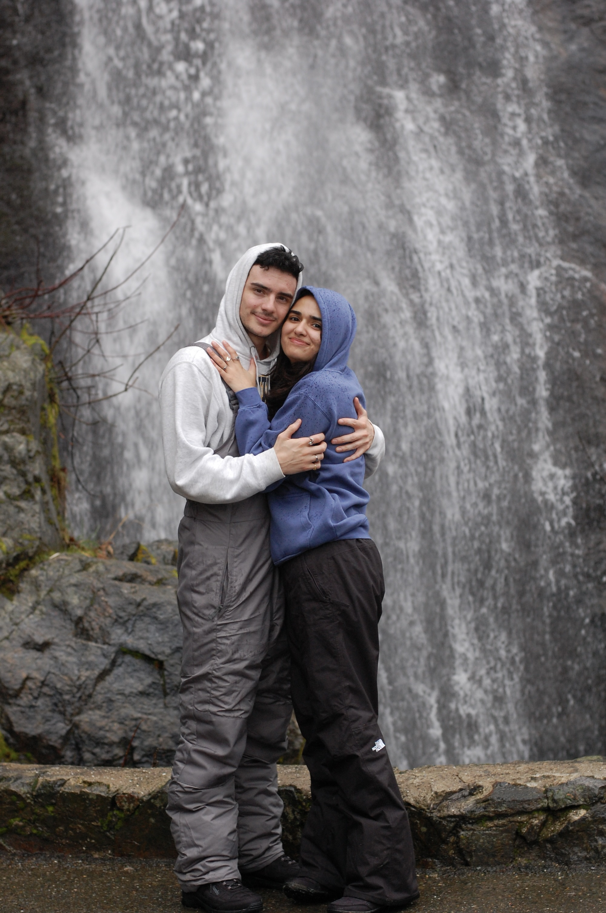
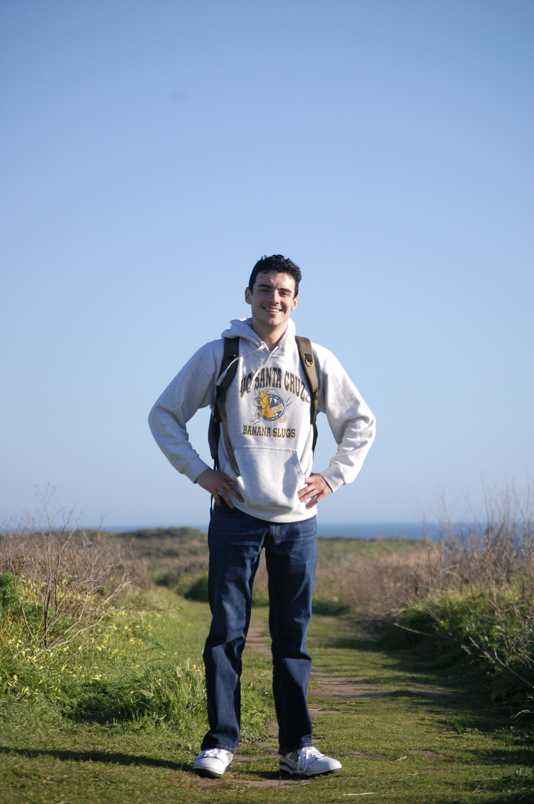

Hobbies.



Manuel S Marshutz
Student BA, Arts & Technology & Information Management University of Santa CruzManuel S Marshutz is currently enrolled at University of Santa Cruz as an Art major and considering a double major or minor in Technology & Information Management. In regards to a career, he's employed by Geek Squad as an Advanced Repair Agent repairing software and/or hardware for various machines. The career interest stems from a deep passion for electronics and creative problem solving that make Information Technology or design an ideal pursuit.